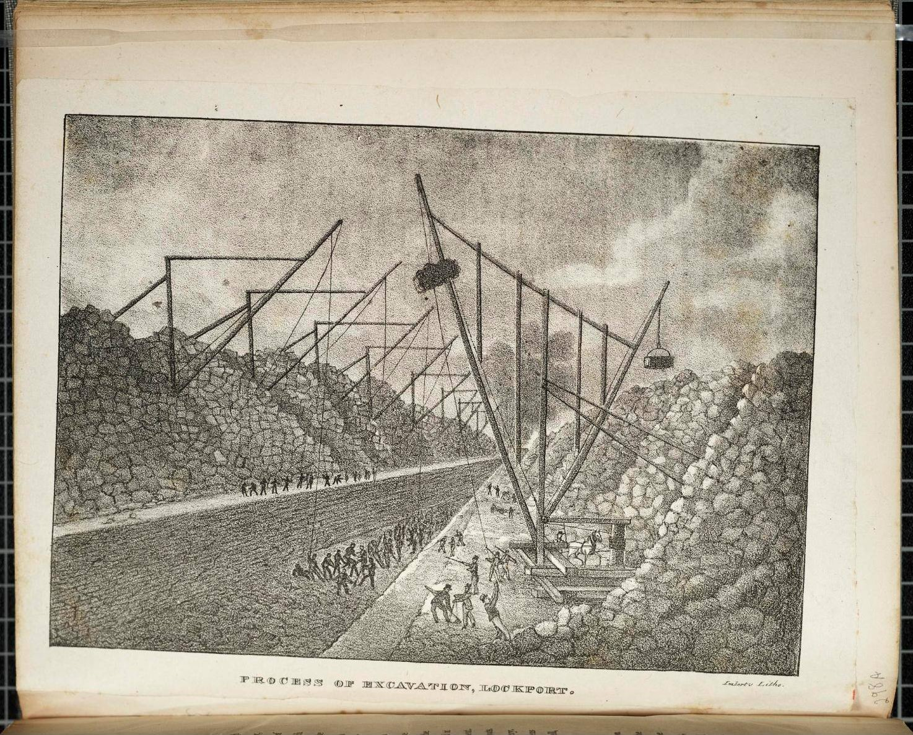

| Field | Detail |
| TOC Fit | Chapter 8 · Essay prompt 8.1 (Revolution or Evolution?); Essay prompt 8.2 (Who Built the Infrastructure?) |
| Why Here | A view of workers, horses, and cranes cutting the Erie Canal through solid rock at Lockport, where the canal climbed the Niagara Escarpment. Students can read it for the scale of labor and engineering that state-funded construction required, and for how the canal’s backers chose to celebrate it. |
| Treatment | Public-domain image; printed caption transcribed |
At Lockport the Erie Canal had to rise about sixty feet over the Niagara Escarpment and then pass through a “deep cut” of solid limestone several miles long. Contractors used gunpowder, hand drills, horse-powered cranes, and hundreds of laborers, many of them Irish immigrants, to blast and haul the rock. The double flight of five locks at Lockport, finished in 1825, was the canal’s most famous engineering work. This view was one of the illustrations in Cadwallader D. Colden’s Memoir, published by the City of New York to commemorate the canal’s completion and the celebrations of November 1825. The book’s lithographs, among the earliest made in the United States, were printed by Anthony Imbert, several of them from drawings by the young artist George Catlin. Editorial note. Image from the Smithsonian Libraries and Archives Image Gallery (Image ID SIL-SIL7-306-01), from its copy of Colden’s Memoir (1825); the Smithsonian marks it “No Copyright – United States.” The Norton Online Reader image could not be consulted for this reader, so the exact print Norton uses could not be confirmed. Attribution of the drawing to George Catlin follows standard descriptions of the Memoir plates and should be confirmed from the plate itself. CAUTION: The print was made for a celebratory civic volume and presents the work as orderly and triumphant. |
|
 |
|
UNIT 3 · AN EXPANDING NATION | HISTORY B17A | DANIEL GARZA, M.A.
|